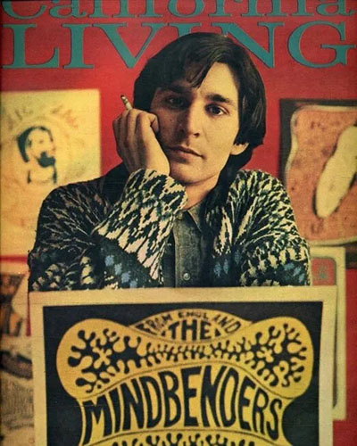
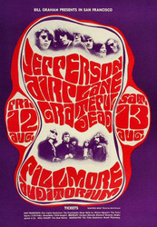
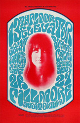
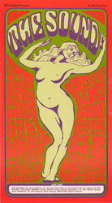
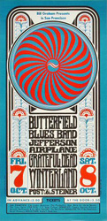
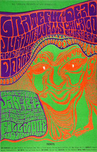
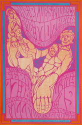
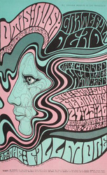
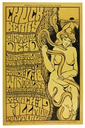
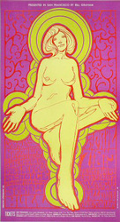

Wes Wilson attended San Francisco State University and was working at Contact Printing, a small San Francisco press, when his career as a psychedelic poster artist took off. At Contact, Wilson did the layout and design for handbills that eventually established him as a poster designer. When the Avalon Ballroon and Bill Graham's Fillmore Auditorium began to hold weekly dance concerts, Wilson was called upon to design the posters. He created psychedelic posters from February 1966 until May 1967, when disputes over money severed his connection with Graham. Wilson's early work was unique, but by mid-1967, so many artists had copied his style that he was easily replaced.
Wilson claims that he was the first artist to create a psychedelic poster. Intended for a particular audience—one that was tuned in to the psychedelic experience—his art, especially the lugubrious, freehand lettering, emerged from Wilson's own involvement with that experience and the psychedelic art of light shows. His influential lettering was derived from the Viennese Secessionist lettering he discovered in a University of California exhibition catalogue.
Wilson's approach to poster making was quite improvisatory. According to the artist, he selected colors through visual experiences with LSD, as well as from his professional experience as a printer. Eventually disillusioned with the career and financial opportunities of poster art, he moved to the Missouri Ozarks, where he lives on a farm.

BG-23
One of the truly classic images from the early BG series, this poster features the Grateful Dead and Jefferson Airplane. Wes Wilson designed the poster and Herb Greene took the photographs. This was Signe Anderson’s last show at The Fillmore with the Airplane; Grace Slick took over on August 16, 1966.

BG-25
This scarce and popular poster features Wes Wilson’s trademark lettering surrounding a wonderful photograph of a very young Grace Slick. This poster advertised one of Slick’s last shows with Great Society before she took off with Jefferson Airplane. This poster was printed in a very small quantity and its popularity made it one of the very first BG posters to be reprinted.

BG-29
The Sound” is one of Wes Wilson’s best and most widely known images. The curvaceous woman dancing in the nude was a representation of the era. The popularity of this poster led to several different printings. The OP-1 was printed in black ink; the OP-2 has magenta-colored ink; the OP-3 has a purple-colored ink. All three are quite scarce due to small print runs and the posters’ popularity. This combination makes this poster quite difficult to find today, especially in top condition.

BG-30
This is a departure from the normal Wes Wilson design. Missing are the human forms and psychedelic lettering common to most of his work of the time. Instead, the viewer is presented with a clean, easy-to-read design that is quite attractive despite its simplicity. Paul Butterfield, Jefferson Airplane, and the Grateful Dead shared the billing for this October 1966 show at Winterland.

BG-45
The original BG-45 poster comes in two types - one has a very thin black line running across the top of the lettering, and the other has a much thicker line. The thin-line version is much scarcer than the thick-line type, and it rarely shows up. The lineup at this show was something - first the Grateful Dead, then Junior Wells, and to top it off - The Doors.

BG-50
At the time of this show, Frank Zappa and The Mothers of Invention was in the process of producing its second album, Absolutely Free, which eventually hit #41 on the Billboard Top 200 chart. Canned Heat and the popular Blues Project—which at the time still included Al Kooper—joined the band on the bill. Wes Wilson’s artwork is interesting, and the central figures look like they are made of stone.

BG-51
This is one of our favorite Wes Wilson posters and it is so popular it was printed twice. The great use of color and design make this image a visual treat. Both printings used ink that faded easily, and many examples seen have muted colors. Superb examples of this original are few and far between.

BG-55
This poster for a 1967 show with Chuck Berry, the Grateful Dead, and Johnny Talbot & De Thangs is printed in black ink with shades of yellowish brown and ochre. One of the images that seems to have held great interest for psychedelic artists is that of a nude woman holding a large snake. Most of the uses of this image were derived from a painting entitled Die Suende (The Sin) by Franz Stuck, who worked in Vienna at the beginning of the 20th century. For BG-55, Wes Wilson has created his own version—which is as good as anything Stuck painted.

BG-58
This poster is chartreuse, yellow-green, and red on a purple background. The central image is a nude figure drawn with her hands extended, palms out and fingers down—a widely recognized gesture of openness. Openness was one of the most important principles of the “hippie value system.” Because this poster was unusually long, it is difficult to find examples that are not torn at either the top or the bottom.